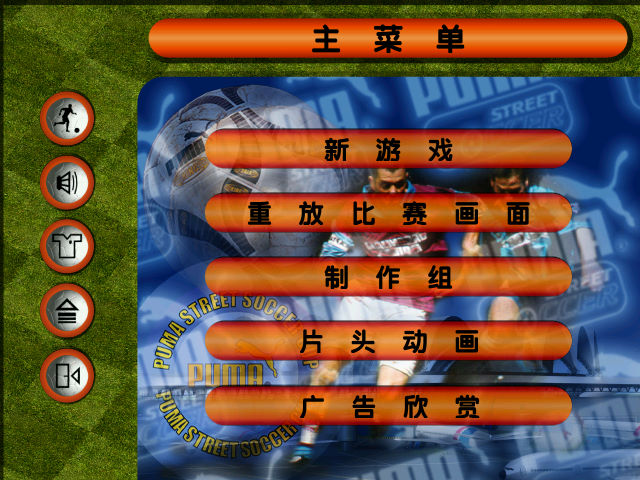
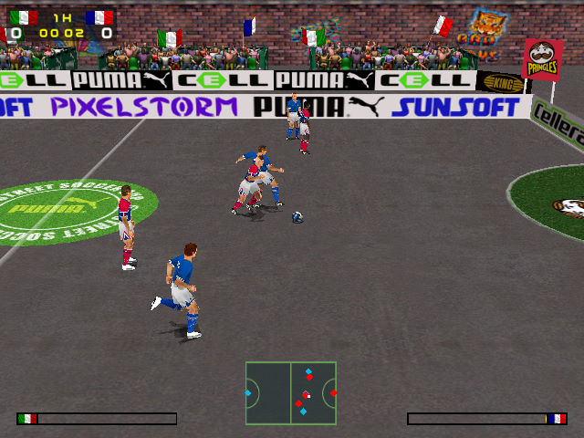

名稱：彪馬街頭足球 (Puma Street Soccer，簡中／英文版) 簡介：PixelStorm 1999年出品的足球遊戲，由Sunsoft代理發行 [待補]。

保護：無 備註：非安裝者，需進行下列Registry註冊： [HKEY_LOCAL_MACHINE\SOFTWARE\Pixelstorm\Puma Street Soccer\1.00.1] [HKEY_LOCAL_MACHINE\SOFTWARE\WOW6432Node\Pixelstorm\Puma Street Soccer\1.00.1] "Path"="." "CurrentDirectory"="." "Language"="1" "ChooseRes"="0" "Resolution"="0" 備註：VirtualBox、VMware+XP搭DxWnd可執行，但部份文字無法顯示，PCem等+Win98須關閉 DirectDraw加速，但速度太慢。建議Win64實體機執行，但要設定puma.exe為XP相容。 備註：遊戲需要d3drm.dll。 檔案：patchpss1.rar = 英文版語言包更新檔（更新後才能顯示出文字）